Xarray Advanced#
In this lesson we go beyond the basics — interpolation, groupby, resample, rolling, and coarsen — and apply them to a real sea-surface-temperature dataset to build climatologies and anomalies, the bread and butter of climate analysis.
Working through this notebook
This page is a Jupyter notebook. Download it using the ⬇ button in the top-right (or copy-paste the cells into a fresh notebook), open it in your environment (JupyterLab on LEAP or Colab), and step through the cells. When you reach a Try it admonition, experiment in your own cells before moving on.
In-class assignment — 10 points
The “Try it” exercises in this notebook are part of your in-class assignment for this section. Complete them in your own copy of the notebook, push it to your week folder, and post the notebook link on the matching Courseworks assignment. (One 10-point assignment covers all the lecture notebooks in this section.)
import numpy as np
import xarray as xr
from matplotlib import pyplot as plt
%xmode Minimal
Exception reporting mode: Minimal
Interpolation#
In the previous lesson on Xarray, we learned how to select data based on its dimension coordinates and align data with different coordinates. But what if we want to estimate the value of the data variables at different coordinates. This is where interpolation comes in.
# we write it out explicitly so we can see each point.
x_data = np.array([0, 1, 2, 3, 4, 5, 6, 7, 8, 9, 10])
f = xr.DataArray(x_data**2, dims=['x'], coords={'x': x_data})
f
<xarray.DataArray (x: 11)> Size: 88B array([ 0, 1, 4, 9, 16, 25, 36, 49, 64, 81, 100]) Coordinates: * x (x) int64 88B 0 1 2 3 4 5 6 7 8 9 10
f.plot(marker='o')
[<matplotlib.lines.Line2D at 0x1188e95d0>]
f.sel(x=4)
<xarray.DataArray ()> Size: 8B
array(16)
Coordinates:
x int64 8B 4We only have data on the integer points in x. But what if we wanted to estimate the value at, say, 4.5?
f.sel(x=4.5)
KeyError: "not all values found in index 'x'. Try setting the `method` keyword argument (example: method='nearest')."
Interpolation to the rescue!
f.sel(x=4), f.sel(x=5)
(<xarray.DataArray ()> Size: 8B
array(16)
Coordinates:
x int64 8B 4,
<xarray.DataArray ()> Size: 8B
array(25)
Coordinates:
x int64 8B 5)
f.interp(x=4.5)
<xarray.DataArray ()> Size: 8B
array(20.5)
Coordinates:
x float64 8B 4.5Interpolation uses scipy.interpolate under the hood. There are different modes of interpolation.
# default
f.interp(x=4.5, method='linear').values
array(20.5)
f.interp(x=4.5, method='nearest').values
array(16.)
f.interp(x=4.5, method='cubic').values
array(20.25)
We can interpolate to a whole new coordinate at once:
x_new = x_data + 0.5
f_interp_linear = f.interp(x=x_new, method='linear')
f_interp_cubic = f.interp(x=x_new, method='cubic')
f.plot(marker='o', label='original')
f_interp_linear.plot(marker='o', label='linear')
f_interp_cubic.plot(marker='o', label='cubic')
plt.legend()
<matplotlib.legend.Legend at 0x11bc58950>
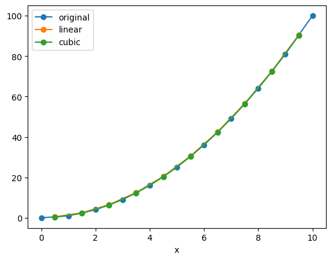
Note that values outside of the original range are not supported:
f_interp_linear.values
array([ 0.5, 2.5, 6.5, 12.5, 20.5, 30.5, 42.5, 56.5, 72.5, 90.5, nan])
Note
You can apply interpolation to any dimension, and even to multiple dimensions at a time.
(Multidimensional interpolation only supports mode='nearest' and mode='linear'.)
But keep in mind that Xarray has no built-in understanding of geography.
If you use interp on lat / lon coordinates, it will just perform naive interpolation of the lat / lon values.
More sophisticated treatment of spherical geometry requires another package such as xesmf.
Try it
Take the f = x**2 DataArray (or build your own). Use .interp() to estimate its value at a non-integer point (e.g. x=4.5), comparing method='linear', 'nearest', and 'cubic'. Then interpolate f onto a whole new set of x-values and plot the original vs. interpolated curves.
Groupby#
Xarray copies Pandas’ very useful groupby functionality, enabling the “split / apply / combine” workflow on xarray DataArrays and Datasets. In the first part of the lesson, we will learn to use groupby by analyzing sea-surface temperature data.
First we load a dataset. We will use the NOAA Extended Reconstructed Sea Surface Temperature (ERSST) v5 product, a widely used and trusted gridded compilation of of historical data going back to 1854.
Since the data is provided via an OPeNDAP server, we can load it directly without downloading anything:
url = 'https://psl.noaa.gov/thredds/dodsC/Datasets/noaa.ersst.v5/sst.mnmean.nc'
ds = xr.open_dataset(url, drop_variables=['time_bnds'])
ds = ds.sel(time=slice('1960', '2018')).load()
ds
<xarray.Dataset> Size: 45MB
Dimensions: (time: 708, lat: 89, lon: 180)
Coordinates:
* time (time) datetime64[ns] 6kB 1960-01-01 1960-02-01 ... 2018-12-01
* lat (lat) float32 356B 88.0 86.0 84.0 82.0 ... -82.0 -84.0 -86.0 -88.0
* lon (lon) float32 720B 0.0 2.0 4.0 6.0 8.0 ... 352.0 354.0 356.0 358.0
Data variables:
sst (time, lat, lon) float32 45MB 0.0 0.0 0.0 0.0 ... 0.0 0.0 0.0 0.0
Attributes: (12/39)
climatology: Climatology is based on 1971-2000 SST, X...
description: In situ data: ICOADS2.5 before 2007 and ...
keywords_vocabulary: NASA Global Change Master Directory (GCM...
keywords: Earth Science > Oceans > Ocean Temperatu...
instrument: Conventional thermometers
source_comment: SSTs were observed by conventional therm...
... ...
comment: SSTs were observed by conventional therm...
summary: ERSST.v5 is developed based on v4 after ...
dataset_title: NOAA Extended Reconstructed SST V5
_NCProperties: version=2,netcdf=4.6.3,hdf5=1.10.5
data_modified: 2026-06-03
DODS_EXTRA.Unlimited_Dimension: timeLet’s do some basic visualizations of the data, just to make sure it looks reasonable.
ds.sst[0].plot(vmin=-2, vmax=30)
<matplotlib.collections.QuadMesh at 0x11ab28110>
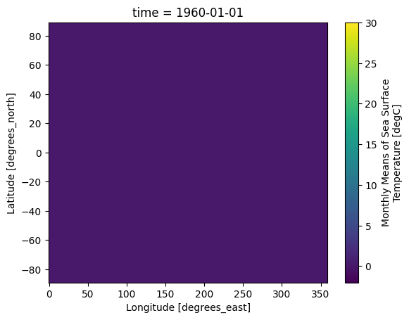
ds.sst.isel(time=0).plot(vmin=-2, vmax=30)
<matplotlib.collections.QuadMesh at 0x11d616410>
Note that xarray correctly parsed the time index, resulting in a Pandas datetime index on the time dimension.
ds.time
<xarray.DataArray 'time' (time: 708)> Size: 6kB
array(['1960-01-01T00:00:00.000000000', '1960-02-01T00:00:00.000000000',
'1960-03-01T00:00:00.000000000', ..., '2018-10-01T00:00:00.000000000',
'2018-11-01T00:00:00.000000000', '2018-12-01T00:00:00.000000000'],
shape=(708,), dtype='datetime64[ns]')
Coordinates:
* time (time) datetime64[ns] 6kB 1960-01-01 1960-02-01 ... 2018-12-01
Attributes:
long_name: Time
delta_t: 0000-01-00 00:00:00
avg_period: 0000-01-00 00:00:00
prev_avg_period: 0000-00-07 00:00:00
standard_name: time
axis: T
actual_range: [19723. 82665.]
_ChunkSizes: 1ds.sst.sel(lon=300, lat=50).plot()
[<matplotlib.lines.Line2D at 0x11d620410>]
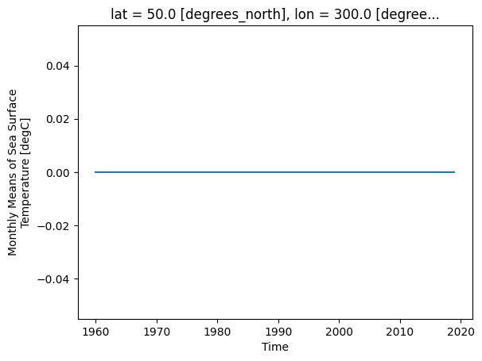
As we can see from the plot, the timeseries at any one point is totally dominated by the seasonal cycle. We would like to remove this seasonal cycle (called the “climatology”) in order to better see the long-term variations in temperature. We will accomplish this using groupby.
The syntax of Xarray’s groupby is almost identical to Pandas. We will first apply groupby to a single DataArray.
ds.sst.groupby?
Split Step#
The most important argument is group: this defines the unique values we will use to “split” the data for grouped analysis. We can pass either a DataArray or a name of a variable in the dataset. Lets first use a DataArray. Just like with Pandas, we can use the time index to extract specific components of dates and times. Xarray uses a special syntax for this .dt, called the DatetimeAccessor.
ds.time
<xarray.DataArray 'time' (time: 708)> Size: 6kB
array(['1960-01-01T00:00:00.000000000', '1960-02-01T00:00:00.000000000',
'1960-03-01T00:00:00.000000000', ..., '2018-10-01T00:00:00.000000000',
'2018-11-01T00:00:00.000000000', '2018-12-01T00:00:00.000000000'],
shape=(708,), dtype='datetime64[ns]')
Coordinates:
* time (time) datetime64[ns] 6kB 1960-01-01 1960-02-01 ... 2018-12-01
Attributes:
long_name: Time
delta_t: 0000-01-00 00:00:00
avg_period: 0000-01-00 00:00:00
prev_avg_period: 0000-00-07 00:00:00
standard_name: time
axis: T
actual_range: [19723. 82665.]
_ChunkSizes: 1ds.time.dt.month
<xarray.DataArray 'month' (time: 708)> Size: 6kB
array([ 1, 2, 3, 4, 5, 6, 7, 8, 9, 10, 11, 12, 1, 2, 3, 4, 5,
6, 7, 8, 9, 10, 11, 12, 1, 2, 3, 4, 5, 6, 7, 8, 9, 10,
11, 12, 1, 2, 3, 4, 5, 6, 7, 8, 9, 10, 11, 12, 1, 2, 3,
4, 5, 6, 7, 8, 9, 10, 11, 12, 1, 2, 3, 4, 5, 6, 7, 8,
9, 10, 11, 12, 1, 2, 3, 4, 5, 6, 7, 8, 9, 10, 11, 12, 1,
2, 3, 4, 5, 6, 7, 8, 9, 10, 11, 12, 1, 2, 3, 4, 5, 6,
7, 8, 9, 10, 11, 12, 1, 2, 3, 4, 5, 6, 7, 8, 9, 10, 11,
12, 1, 2, 3, 4, 5, 6, 7, 8, 9, 10, 11, 12, 1, 2, 3, 4,
5, 6, 7, 8, 9, 10, 11, 12, 1, 2, 3, 4, 5, 6, 7, 8, 9,
10, 11, 12, 1, 2, 3, 4, 5, 6, 7, 8, 9, 10, 11, 12, 1, 2,
3, 4, 5, 6, 7, 8, 9, 10, 11, 12, 1, 2, 3, 4, 5, 6, 7,
8, 9, 10, 11, 12, 1, 2, 3, 4, 5, 6, 7, 8, 9, 10, 11, 12,
1, 2, 3, 4, 5, 6, 7, 8, 9, 10, 11, 12, 1, 2, 3, 4, 5,
6, 7, 8, 9, 10, 11, 12, 1, 2, 3, 4, 5, 6, 7, 8, 9, 10,
11, 12, 1, 2, 3, 4, 5, 6, 7, 8, 9, 10, 11, 12, 1, 2, 3,
4, 5, 6, 7, 8, 9, 10, 11, 12, 1, 2, 3, 4, 5, 6, 7, 8,
9, 10, 11, 12, 1, 2, 3, 4, 5, 6, 7, 8, 9, 10, 11, 12, 1,
2, 3, 4, 5, 6, 7, 8, 9, 10, 11, 12, 1, 2, 3, 4, 5, 6,
7, 8, 9, 10, 11, 12, 1, 2, 3, 4, 5, 6, 7, 8, 9, 10, 11,
12, 1, 2, 3, 4, 5, 6, 7, 8, 9, 10, 11, 12, 1, 2, 3, 4,
...
3, 4, 5, 6, 7, 8, 9, 10, 11, 12, 1, 2, 3, 4, 5, 6, 7,
8, 9, 10, 11, 12, 1, 2, 3, 4, 5, 6, 7, 8, 9, 10, 11, 12,
1, 2, 3, 4, 5, 6, 7, 8, 9, 10, 11, 12, 1, 2, 3, 4, 5,
6, 7, 8, 9, 10, 11, 12, 1, 2, 3, 4, 5, 6, 7, 8, 9, 10,
11, 12, 1, 2, 3, 4, 5, 6, 7, 8, 9, 10, 11, 12, 1, 2, 3,
4, 5, 6, 7, 8, 9, 10, 11, 12, 1, 2, 3, 4, 5, 6, 7, 8,
9, 10, 11, 12, 1, 2, 3, 4, 5, 6, 7, 8, 9, 10, 11, 12, 1,
2, 3, 4, 5, 6, 7, 8, 9, 10, 11, 12, 1, 2, 3, 4, 5, 6,
7, 8, 9, 10, 11, 12, 1, 2, 3, 4, 5, 6, 7, 8, 9, 10, 11,
12, 1, 2, 3, 4, 5, 6, 7, 8, 9, 10, 11, 12, 1, 2, 3, 4,
5, 6, 7, 8, 9, 10, 11, 12, 1, 2, 3, 4, 5, 6, 7, 8, 9,
10, 11, 12, 1, 2, 3, 4, 5, 6, 7, 8, 9, 10, 11, 12, 1, 2,
3, 4, 5, 6, 7, 8, 9, 10, 11, 12, 1, 2, 3, 4, 5, 6, 7,
8, 9, 10, 11, 12, 1, 2, 3, 4, 5, 6, 7, 8, 9, 10, 11, 12,
1, 2, 3, 4, 5, 6, 7, 8, 9, 10, 11, 12, 1, 2, 3, 4, 5,
6, 7, 8, 9, 10, 11, 12, 1, 2, 3, 4, 5, 6, 7, 8, 9, 10,
11, 12, 1, 2, 3, 4, 5, 6, 7, 8, 9, 10, 11, 12, 1, 2, 3,
4, 5, 6, 7, 8, 9, 10, 11, 12, 1, 2, 3, 4, 5, 6, 7, 8,
9, 10, 11, 12, 1, 2, 3, 4, 5, 6, 7, 8, 9, 10, 11, 12, 1,
2, 3, 4, 5, 6, 7, 8, 9, 10, 11, 12])
Coordinates:
* time (time) datetime64[ns] 6kB 1960-01-01 1960-02-01 ... 2018-12-01
Attributes:
long_name: Time
delta_t: 0000-01-00 00:00:00
avg_period: 0000-01-00 00:00:00
prev_avg_period: 0000-00-07 00:00:00
standard_name: time
axis: T
actual_range: [19723. 82665.]
_ChunkSizes: 1ds.time.dt.year
<xarray.DataArray 'year' (time: 708)> Size: 6kB
array([1960, 1960, 1960, 1960, 1960, 1960, 1960, 1960, 1960, 1960, 1960,
1960, 1961, 1961, 1961, 1961, 1961, 1961, 1961, 1961, 1961, 1961,
1961, 1961, 1962, 1962, 1962, 1962, 1962, 1962, 1962, 1962, 1962,
1962, 1962, 1962, 1963, 1963, 1963, 1963, 1963, 1963, 1963, 1963,
1963, 1963, 1963, 1963, 1964, 1964, 1964, 1964, 1964, 1964, 1964,
1964, 1964, 1964, 1964, 1964, 1965, 1965, 1965, 1965, 1965, 1965,
1965, 1965, 1965, 1965, 1965, 1965, 1966, 1966, 1966, 1966, 1966,
1966, 1966, 1966, 1966, 1966, 1966, 1966, 1967, 1967, 1967, 1967,
1967, 1967, 1967, 1967, 1967, 1967, 1967, 1967, 1968, 1968, 1968,
1968, 1968, 1968, 1968, 1968, 1968, 1968, 1968, 1968, 1969, 1969,
1969, 1969, 1969, 1969, 1969, 1969, 1969, 1969, 1969, 1969, 1970,
1970, 1970, 1970, 1970, 1970, 1970, 1970, 1970, 1970, 1970, 1970,
1971, 1971, 1971, 1971, 1971, 1971, 1971, 1971, 1971, 1971, 1971,
1971, 1972, 1972, 1972, 1972, 1972, 1972, 1972, 1972, 1972, 1972,
1972, 1972, 1973, 1973, 1973, 1973, 1973, 1973, 1973, 1973, 1973,
1973, 1973, 1973, 1974, 1974, 1974, 1974, 1974, 1974, 1974, 1974,
1974, 1974, 1974, 1974, 1975, 1975, 1975, 1975, 1975, 1975, 1975,
1975, 1975, 1975, 1975, 1975, 1976, 1976, 1976, 1976, 1976, 1976,
1976, 1976, 1976, 1976, 1976, 1976, 1977, 1977, 1977, 1977, 1977,
1977, 1977, 1977, 1977, 1977, 1977, 1977, 1978, 1978, 1978, 1978,
...
2001, 2001, 2001, 2001, 2001, 2001, 2001, 2001, 2001, 2002, 2002,
2002, 2002, 2002, 2002, 2002, 2002, 2002, 2002, 2002, 2002, 2003,
2003, 2003, 2003, 2003, 2003, 2003, 2003, 2003, 2003, 2003, 2003,
2004, 2004, 2004, 2004, 2004, 2004, 2004, 2004, 2004, 2004, 2004,
2004, 2005, 2005, 2005, 2005, 2005, 2005, 2005, 2005, 2005, 2005,
2005, 2005, 2006, 2006, 2006, 2006, 2006, 2006, 2006, 2006, 2006,
2006, 2006, 2006, 2007, 2007, 2007, 2007, 2007, 2007, 2007, 2007,
2007, 2007, 2007, 2007, 2008, 2008, 2008, 2008, 2008, 2008, 2008,
2008, 2008, 2008, 2008, 2008, 2009, 2009, 2009, 2009, 2009, 2009,
2009, 2009, 2009, 2009, 2009, 2009, 2010, 2010, 2010, 2010, 2010,
2010, 2010, 2010, 2010, 2010, 2010, 2010, 2011, 2011, 2011, 2011,
2011, 2011, 2011, 2011, 2011, 2011, 2011, 2011, 2012, 2012, 2012,
2012, 2012, 2012, 2012, 2012, 2012, 2012, 2012, 2012, 2013, 2013,
2013, 2013, 2013, 2013, 2013, 2013, 2013, 2013, 2013, 2013, 2014,
2014, 2014, 2014, 2014, 2014, 2014, 2014, 2014, 2014, 2014, 2014,
2015, 2015, 2015, 2015, 2015, 2015, 2015, 2015, 2015, 2015, 2015,
2015, 2016, 2016, 2016, 2016, 2016, 2016, 2016, 2016, 2016, 2016,
2016, 2016, 2017, 2017, 2017, 2017, 2017, 2017, 2017, 2017, 2017,
2017, 2017, 2017, 2018, 2018, 2018, 2018, 2018, 2018, 2018, 2018,
2018, 2018, 2018, 2018])
Coordinates:
* time (time) datetime64[ns] 6kB 1960-01-01 1960-02-01 ... 2018-12-01
Attributes:
long_name: Time
delta_t: 0000-01-00 00:00:00
avg_period: 0000-01-00 00:00:00
prev_avg_period: 0000-00-07 00:00:00
standard_name: time
axis: T
actual_range: [19723. 82665.]
_ChunkSizes: 1We can use these arrays in a groupby operation:
gb = ds.sst.groupby(ds.time.dt.month)
gb
<DataArrayGroupBy, grouped over 1 grouper(s), 12 groups in total:
'month': UniqueGrouper('month'), 12/12 groups with labels 1, 2, 3, 4, 5, 6, 7, 8, 9, 10, 11, 12>
Xarray also offers a more concise syntax when the variable you’re grouping on is already present in the dataset. This is identical to the previous line:
gb = ds.sst.groupby('time.month')
gb
<DataArrayGroupBy, grouped over 1 grouper(s), 12 groups in total:
'month': UniqueGrouper('month'), 12/12 groups with labels 1, 2, 3, 4, 5, 6, 7, 8, 9, 10, 11, 12>
Now that the data are split, we can manually iterate over the group. The iterator returns the key (group name) and the value (the actual dataset corresponding to that group) for each group.
for group_name, group_da in gb:
# stop iterating after the first loop
break
print(group_name)
group_da
1
<xarray.DataArray 'sst' (time: 59, lat: 89, lon: 180)> Size: 4MB
array([[[0., 0., 0., ..., 0., 0., 0.],
[0., 0., 0., ..., 0., 0., 0.],
[0., 0., 0., ..., 0., 0., 0.],
...,
[0., 0., 0., ..., 0., 0., 0.],
[0., 0., 0., ..., 0., 0., 0.],
[0., 0., 0., ..., 0., 0., 0.]],
[[0., 0., 0., ..., 0., 0., 0.],
[0., 0., 0., ..., 0., 0., 0.],
[0., 0., 0., ..., 0., 0., 0.],
...,
[0., 0., 0., ..., 0., 0., 0.],
[0., 0., 0., ..., 0., 0., 0.],
[0., 0., 0., ..., 0., 0., 0.]],
[[0., 0., 0., ..., 0., 0., 0.],
[0., 0., 0., ..., 0., 0., 0.],
[0., 0., 0., ..., 0., 0., 0.],
...,
...
[0., 0., 0., ..., 0., 0., 0.],
[0., 0., 0., ..., 0., 0., 0.],
[0., 0., 0., ..., 0., 0., 0.]],
[[0., 0., 0., ..., 0., 0., 0.],
[0., 0., 0., ..., 0., 0., 0.],
[0., 0., 0., ..., 0., 0., 0.],
...,
[0., 0., 0., ..., 0., 0., 0.],
[0., 0., 0., ..., 0., 0., 0.],
[0., 0., 0., ..., 0., 0., 0.]],
[[0., 0., 0., ..., 0., 0., 0.],
[0., 0., 0., ..., 0., 0., 0.],
[0., 0., 0., ..., 0., 0., 0.],
...,
[0., 0., 0., ..., 0., 0., 0.],
[0., 0., 0., ..., 0., 0., 0.],
[0., 0., 0., ..., 0., 0., 0.]]],
shape=(59, 89, 180), dtype=float32)
Coordinates:
* time (time) datetime64[ns] 472B 1960-01-01 1961-01-01 ... 2018-01-01
* lat (lat) float32 356B 88.0 86.0 84.0 82.0 ... -82.0 -84.0 -86.0 -88.0
* lon (lon) float32 720B 0.0 2.0 4.0 6.0 8.0 ... 352.0 354.0 356.0 358.0
Attributes:
long_name: Monthly Means of Sea Surface Temperature
units: degC
var_desc: Sea Surface Temperature
level_desc: Surface
statistic: Mean
dataset: NOAA Extended Reconstructed SST V5
parent_stat: Individual Values
actual_range: [-1.8 42.32636]
valid_range: [-1.8 45. ]
_ChunkSizes: [ 1 89 180]group_da.mean('time').plot()
<matplotlib.collections.QuadMesh at 0x11ec03690>
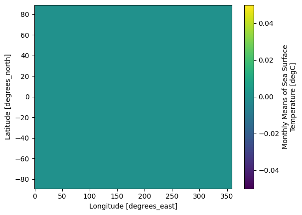
Map & Combine#
Now that we have groups defined, it’s time to “apply” a calculation to the group. Like in Pandas, these calculations can either be:
aggregation: reduces the size of the group
transformation: preserves the group’s full size
At the end of the apply step, xarray will automatically combine the aggregated / transformed groups back into a single object.
Warning
Xarray calls the “apply” step map. This is different from Pandas!
The most fundamental way to apply is with the .map method.
gb.map?
Aggregations#
.map accepts as its argument a function. We can pass an existing function:
gb.map(np.mean)
<xarray.DataArray 'sst' (month: 12)> Size: 48B
array([0., 0., 0., 0., 0., 0., 0., 0., 0., 0., 0., 0.], dtype=float32)
Coordinates:
* month (month) int64 96B 1 2 3 4 5 6 7 8 9 10 11 12
Attributes:
long_name: Monthly Means of Sea Surface Temperature
units: degC
var_desc: Sea Surface Temperature
level_desc: Surface
statistic: Mean
dataset: NOAA Extended Reconstructed SST V5
parent_stat: Individual Values
actual_range: [-1.8 42.32636]
valid_range: [-1.8 45. ]
_ChunkSizes: [ 1 89 180]Because we specified no extra arguments (like axis) the function was applied over all space and time dimensions. This is not what we wanted. Instead, we could define a custom function. This function takes a single argument–the group dataset–and returns a new dataset to be combined:
def time_mean(a):
return a.mean(dim='time')
gb.map(time_mean)
<xarray.DataArray 'sst' (month: 12, lat: 89, lon: 180)> Size: 769kB
array([[[0., 0., 0., ..., 0., 0., 0.],
[0., 0., 0., ..., 0., 0., 0.],
[0., 0., 0., ..., 0., 0., 0.],
...,
[0., 0., 0., ..., 0., 0., 0.],
[0., 0., 0., ..., 0., 0., 0.],
[0., 0., 0., ..., 0., 0., 0.]],
[[0., 0., 0., ..., 0., 0., 0.],
[0., 0., 0., ..., 0., 0., 0.],
[0., 0., 0., ..., 0., 0., 0.],
...,
[0., 0., 0., ..., 0., 0., 0.],
[0., 0., 0., ..., 0., 0., 0.],
[0., 0., 0., ..., 0., 0., 0.]],
[[0., 0., 0., ..., 0., 0., 0.],
[0., 0., 0., ..., 0., 0., 0.],
[0., 0., 0., ..., 0., 0., 0.],
...,
...
[0., 0., 0., ..., 0., 0., 0.],
[0., 0., 0., ..., 0., 0., 0.],
[0., 0., 0., ..., 0., 0., 0.]],
[[0., 0., 0., ..., 0., 0., 0.],
[0., 0., 0., ..., 0., 0., 0.],
[0., 0., 0., ..., 0., 0., 0.],
...,
[0., 0., 0., ..., 0., 0., 0.],
[0., 0., 0., ..., 0., 0., 0.],
[0., 0., 0., ..., 0., 0., 0.]],
[[0., 0., 0., ..., 0., 0., 0.],
[0., 0., 0., ..., 0., 0., 0.],
[0., 0., 0., ..., 0., 0., 0.],
...,
[0., 0., 0., ..., 0., 0., 0.],
[0., 0., 0., ..., 0., 0., 0.],
[0., 0., 0., ..., 0., 0., 0.]]],
shape=(12, 89, 180), dtype=float32)
Coordinates:
* month (month) int64 96B 1 2 3 4 5 6 7 8 9 10 11 12
* lat (lat) float32 356B 88.0 86.0 84.0 82.0 ... -82.0 -84.0 -86.0 -88.0
* lon (lon) float32 720B 0.0 2.0 4.0 6.0 8.0 ... 352.0 354.0 356.0 358.0
Attributes:
long_name: Monthly Means of Sea Surface Temperature
units: degC
var_desc: Sea Surface Temperature
level_desc: Surface
statistic: Mean
dataset: NOAA Extended Reconstructed SST V5
parent_stat: Individual Values
actual_range: [-1.8 42.32636]
valid_range: [-1.8 45. ]
_ChunkSizes: [ 1 89 180]gb.map(time_mean).sel(month=1).plot()
<matplotlib.collections.QuadMesh at 0x11ed7b690>
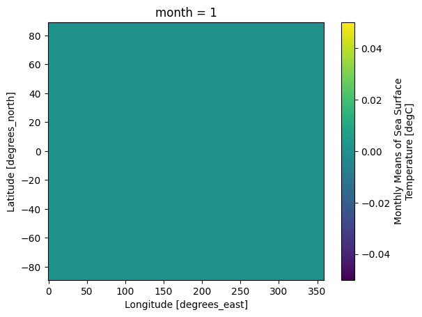
Like Pandas, xarray’s groupby object has many built-in aggregation operations (e.g. mean, min, max, std, etc):
# this does the same thing as the previous cell
sst_mm = gb.mean('time')
sst_mm
<xarray.DataArray 'sst' (month: 12, lat: 89, lon: 180)> Size: 769kB
array([[[0., 0., 0., ..., 0., 0., 0.],
[0., 0., 0., ..., 0., 0., 0.],
[0., 0., 0., ..., 0., 0., 0.],
...,
[0., 0., 0., ..., 0., 0., 0.],
[0., 0., 0., ..., 0., 0., 0.],
[0., 0., 0., ..., 0., 0., 0.]],
[[0., 0., 0., ..., 0., 0., 0.],
[0., 0., 0., ..., 0., 0., 0.],
[0., 0., 0., ..., 0., 0., 0.],
...,
[0., 0., 0., ..., 0., 0., 0.],
[0., 0., 0., ..., 0., 0., 0.],
[0., 0., 0., ..., 0., 0., 0.]],
[[0., 0., 0., ..., 0., 0., 0.],
[0., 0., 0., ..., 0., 0., 0.],
[0., 0., 0., ..., 0., 0., 0.],
...,
...
[0., 0., 0., ..., 0., 0., 0.],
[0., 0., 0., ..., 0., 0., 0.],
[0., 0., 0., ..., 0., 0., 0.]],
[[0., 0., 0., ..., 0., 0., 0.],
[0., 0., 0., ..., 0., 0., 0.],
[0., 0., 0., ..., 0., 0., 0.],
...,
[0., 0., 0., ..., 0., 0., 0.],
[0., 0., 0., ..., 0., 0., 0.],
[0., 0., 0., ..., 0., 0., 0.]],
[[0., 0., 0., ..., 0., 0., 0.],
[0., 0., 0., ..., 0., 0., 0.],
[0., 0., 0., ..., 0., 0., 0.],
...,
[0., 0., 0., ..., 0., 0., 0.],
[0., 0., 0., ..., 0., 0., 0.],
[0., 0., 0., ..., 0., 0., 0.]]],
shape=(12, 89, 180), dtype=float32)
Coordinates:
* month (month) int64 96B 1 2 3 4 5 6 7 8 9 10 11 12
* lat (lat) float32 356B 88.0 86.0 84.0 82.0 ... -82.0 -84.0 -86.0 -88.0
* lon (lon) float32 720B 0.0 2.0 4.0 6.0 8.0 ... 352.0 354.0 356.0 358.0
Attributes:
long_name: Monthly Means of Sea Surface Temperature
units: degC
var_desc: Sea Surface Temperature
level_desc: Surface
statistic: Mean
dataset: NOAA Extended Reconstructed SST V5
parent_stat: Individual Values
actual_range: [-1.8 42.32636]
valid_range: [-1.8 45. ]
_ChunkSizes: [ 1 89 180]So we did what we wanted to do: calculate the climatology at every point in the dataset. Let’s look at the data a bit.
Climatology at a specific point in the North Atlantic
sst_mm.sel(lon=300, lat=50).plot()
[<matplotlib.lines.Line2D at 0x11edd0410>]
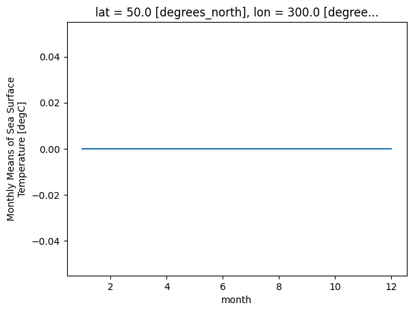
Zonal Mean Climatology
sst_mm.mean(dim='lon').transpose().plot.contourf(levels=12, vmin=-2, vmax=30)
<matplotlib.contour.QuadContourSet at 0x11ee439d0>
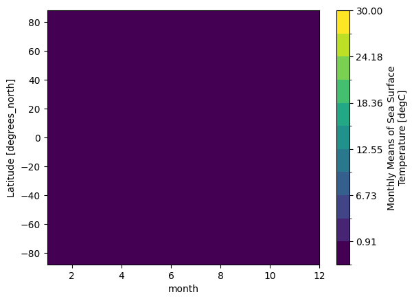
Difference between January and July Climatology
(sst_mm.sel(month=1) - sst_mm.sel(month=7)).plot(vmax=10)
<matplotlib.collections.QuadMesh at 0x11ef6b690>
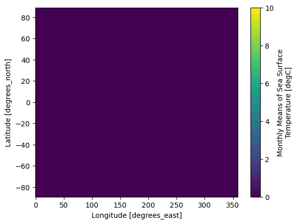
Transformations#
Now we want to remove this climatology from the dataset, to examine the residual, called the anomaly, which is the interesting part from a climate perspective. Removing the seasonal climatology is a perfect example of a transformation: it operates over a group, but doesn’t change the size of the dataset. Here is one way to code it.
def remove_time_mean(x):
return x - x.mean(dim='time')
ds_anom = ds.groupby('time.month').map(remove_time_mean)
ds_anom
<xarray.Dataset> Size: 45MB
Dimensions: (time: 708, lat: 89, lon: 180)
Coordinates:
* time (time) datetime64[ns] 6kB 1960-01-01 1960-02-01 ... 2018-12-01
* lat (lat) float32 356B 88.0 86.0 84.0 82.0 ... -82.0 -84.0 -86.0 -88.0
* lon (lon) float32 720B 0.0 2.0 4.0 6.0 8.0 ... 352.0 354.0 356.0 358.0
Data variables:
sst (time, lat, lon) float32 45MB 0.0 0.0 0.0 0.0 ... 0.0 0.0 0.0 0.0
Attributes: (12/39)
climatology: Climatology is based on 1971-2000 SST, X...
description: In situ data: ICOADS2.5 before 2007 and ...
keywords_vocabulary: NASA Global Change Master Directory (GCM...
keywords: Earth Science > Oceans > Ocean Temperatu...
instrument: Conventional thermometers
source_comment: SSTs were observed by conventional therm...
... ...
comment: SSTs were observed by conventional therm...
summary: ERSST.v5 is developed based on v4 after ...
dataset_title: NOAA Extended Reconstructed SST V5
_NCProperties: version=2,netcdf=4.6.3,hdf5=1.10.5
data_modified: 2026-06-03
DODS_EXTRA.Unlimited_Dimension: timeds_anom.sst.sel(lon=300, lat=50).plot()
[<matplotlib.lines.Line2D at 0x13897e4d0>]
Note
In the above example, we applied groupby to a Dataset instead of a DataArray.
Xarray makes these sorts of transformations easy by supporting groupby arithmetic. This concept is easiest explained with an example:
gb = ds.groupby('time.month')
ds_anom = gb - gb.mean(dim='time')
ds_anom
<xarray.Dataset> Size: 45MB
Dimensions: (lat: 89, lon: 180, time: 708)
Coordinates:
* lat (lat) float32 356B 88.0 86.0 84.0 82.0 ... -82.0 -84.0 -86.0 -88.0
* lon (lon) float32 720B 0.0 2.0 4.0 6.0 8.0 ... 352.0 354.0 356.0 358.0
* time (time) datetime64[ns] 6kB 1960-01-01 1960-02-01 ... 2018-12-01
month (time) int64 6kB 1 2 3 4 5 6 7 8 9 10 11 ... 3 4 5 6 7 8 9 10 11 12
Data variables:
sst (time, lat, lon) float32 45MB 0.0 0.0 0.0 0.0 ... 0.0 0.0 0.0 0.0
Attributes: (12/39)
climatology: Climatology is based on 1971-2000 SST, X...
description: In situ data: ICOADS2.5 before 2007 and ...
keywords_vocabulary: NASA Global Change Master Directory (GCM...
keywords: Earth Science > Oceans > Ocean Temperatu...
instrument: Conventional thermometers
source_comment: SSTs were observed by conventional therm...
... ...
comment: SSTs were observed by conventional therm...
summary: ERSST.v5 is developed based on v4 after ...
dataset_title: NOAA Extended Reconstructed SST V5
_NCProperties: version=2,netcdf=4.6.3,hdf5=1.10.5
data_modified: 2026-06-03
DODS_EXTRA.Unlimited_Dimension: timeNow we can view the climate signal without the overwhelming influence of the seasonal cycle.
Timeseries at a single point in the North Atlantic
ds_anom.sst.sel(lon=300, lat=50).plot()
[<matplotlib.lines.Line2D at 0x11efcdf10>]
Difference between Jan. 1 2018 and Jan. 1 1960
(ds_anom.sel(time='2018-01-01') - ds_anom.sel(time='1960-01-01')).sst.plot()
<matplotlib.collections.QuadMesh at 0x138973a50>
Try it
Using the SST ds, build the monthly climatology with ds.sst.groupby('time.month').mean('time') and plot it at a point of your choice. Then compute the anomaly with groupby arithmetic (gb - gb.mean('time')) and plot its timeseries at the same point — the seasonal cycle should be gone.
Coarsen#
coarsen is a simple way to reduce the size of your data along one or more axes.
It is very similar to resample when operating on time dimensions; the key difference is that coarsen only operates on fixed blocks of data, irrespective of the coordinate values, while resample actually looks at the coordinates to figure out, e.g. what month a particular data point is in.
For regularly-spaced monthly data beginning in January, the following should be equivalent to annual resampling. However, results would different for irregularly-spaced data.
ds.coarsen(time=12).mean()
<xarray.Dataset> Size: 4MB
Dimensions: (time: 59, lat: 89, lon: 180)
Coordinates:
* time (time) datetime64[ns] 472B 1960-06-16T08:00:00 ... 2018-06-16T12...
* lat (lat) float32 356B 88.0 86.0 84.0 82.0 ... -82.0 -84.0 -86.0 -88.0
* lon (lon) float32 720B 0.0 2.0 4.0 6.0 8.0 ... 352.0 354.0 356.0 358.0
Data variables:
sst (time, lat, lon) float32 4MB 0.0 0.0 0.0 0.0 ... 0.0 0.0 0.0 0.0
Attributes: (12/39)
climatology: Climatology is based on 1971-2000 SST, X...
description: In situ data: ICOADS2.5 before 2007 and ...
keywords_vocabulary: NASA Global Change Master Directory (GCM...
keywords: Earth Science > Oceans > Ocean Temperatu...
instrument: Conventional thermometers
source_comment: SSTs were observed by conventional therm...
... ...
comment: SSTs were observed by conventional therm...
summary: ERSST.v5 is developed based on v4 after ...
dataset_title: NOAA Extended Reconstructed SST V5
_NCProperties: version=2,netcdf=4.6.3,hdf5=1.10.5
data_modified: 2026-06-03
DODS_EXTRA.Unlimited_Dimension: timeCoarsen also works on spatial coordinates (or any coordinates).
ds_coarse = ds.coarsen(lon=4, lat=4, boundary='pad').mean()
ds_coarse.sst.isel(time=0).plot(vmin=2, vmax=30, figsize=(12, 5), edgecolor='k')
<matplotlib.collections.QuadMesh at 0x138c43750>
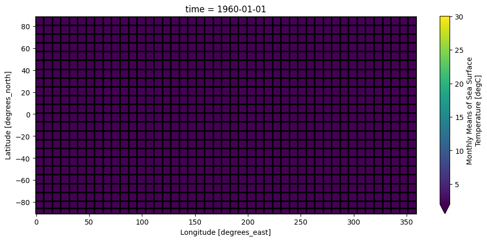
Try it
Use ds.coarsen(lon=4, lat=4, boundary='pad').mean() to coarsen the SST map and plot one time step. Then use ds.coarsen(time=12).mean() to make annual-block means, and compare with the resample result above.
An Advanced Example#
In this example we will show a realistic workflow with Xarray. We will
Load a “basin mask” dataset
Interpolate the basins to our SST dataset coordinates
Group the SST by basin
Convert to Pandas Dataframe and plot mean SST by basin
basin = xr.open_dataset('http://iridl.ldeo.columbia.edu/SOURCES/.NOAA/.NODC/.WOA09/.Masks/.basin/dods')
basin
<xarray.Dataset> Size: 9MB
Dimensions: (Z: 33, Y: 180, X: 360)
Coordinates:
* Z (Z) float32 132B 0.0 10.0 20.0 30.0 ... 4e+03 4.5e+03 5e+03 5.5e+03
* Y (Y) float32 720B -89.5 -88.5 -87.5 -86.5 ... 86.5 87.5 88.5 89.5
* X (X) float32 1kB 0.5 1.5 2.5 3.5 4.5 ... 356.5 357.5 358.5 359.5
Data variables:
basin (Z, Y, X) float32 9MB ...
Attributes:
Conventions: IRIDLbasin = basin.rename({'X': 'lon', 'Y': 'lat'})
basin
<xarray.Dataset> Size: 9MB
Dimensions: (Z: 33, lat: 180, lon: 360)
Coordinates:
* Z (Z) float32 132B 0.0 10.0 20.0 30.0 ... 4e+03 4.5e+03 5e+03 5.5e+03
* lat (lat) float32 720B -89.5 -88.5 -87.5 -86.5 ... 86.5 87.5 88.5 89.5
* lon (lon) float32 1kB 0.5 1.5 2.5 3.5 4.5 ... 356.5 357.5 358.5 359.5
Data variables:
basin (Z, lat, lon) float32 9MB ...
Attributes:
Conventions: IRIDLbasin_surf = basin.basin[0]
basin_surf
<xarray.DataArray 'basin' (lat: 180, lon: 360)> Size: 259kB
[64800 values with dtype=float32]
Coordinates:
* lat (lat) float32 720B -89.5 -88.5 -87.5 -86.5 ... 86.5 87.5 88.5 89.5
* lon (lon) float32 1kB 0.5 1.5 2.5 3.5 4.5 ... 356.5 357.5 358.5 359.5
Z float32 4B 0.0
Attributes:
long_name: basin code
units: ids
scale_max: 58
CLIST: Atlantic Ocean\nPacific Ocean \nIndian Ocean\nMediterranean S...
valid_min: 1
valid_max: 58
scale_min: 1basin_surf.plot()
<matplotlib.collections.QuadMesh at 0x138b9e4d0>
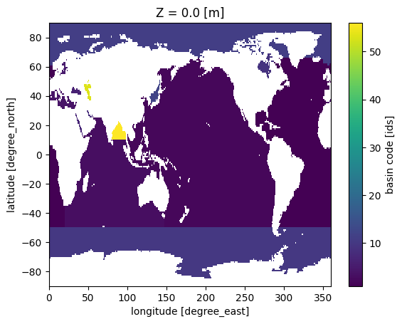
basin_surf_interp = basin_surf.interp_like(ds.sst, method='nearest')
basin_surf_interp.plot(vmax=10)
<matplotlib.collections.QuadMesh at 0x13a1b2ed0>
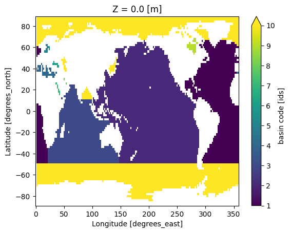
ds.sst.groupby(basin_surf_interp).first()
<xarray.DataArray 'sst' (time: 708, basin: 14)> Size: 40kB
array([[0., 0., 0., ..., 0., 0., 0.],
[0., 0., 0., ..., 0., 0., 0.],
[0., 0., 0., ..., 0., 0., 0.],
...,
[0., 0., 0., ..., 0., 0., 0.],
[0., 0., 0., ..., 0., 0., 0.],
[0., 0., 0., ..., 0., 0., 0.]], shape=(708, 14), dtype=float32)
Coordinates:
* time (time) datetime64[ns] 6kB 1960-01-01 1960-02-01 ... 2018-12-01
* basin (basin) float32 56B 1.0 2.0 3.0 4.0 5.0 ... 11.0 12.0 53.0 56.0
Attributes:
long_name: Monthly Means of Sea Surface Temperature
units: degC
var_desc: Sea Surface Temperature
level_desc: Surface
statistic: Mean
dataset: NOAA Extended Reconstructed SST V5
parent_stat: Individual Values
actual_range: [-1.8 42.32636]
valid_range: [-1.8 45. ]
_ChunkSizes: [ 1 89 180]basin_mean_sst = ds.sst.groupby(basin_surf_interp).mean()
basin_mean_sst
<xarray.DataArray 'sst' (time: 708, basin: 14)> Size: 40kB
array([[0., 0., 0., ..., 0., 0., 0.],
[0., 0., 0., ..., 0., 0., 0.],
[0., 0., 0., ..., 0., 0., 0.],
...,
[0., 0., 0., ..., 0., 0., 0.],
[0., 0., 0., ..., 0., 0., 0.],
[0., 0., 0., ..., 0., 0., 0.]], shape=(708, 14), dtype=float32)
Coordinates:
* time (time) datetime64[ns] 6kB 1960-01-01 1960-02-01 ... 2018-12-01
* basin (basin) float32 56B 1.0 2.0 3.0 4.0 5.0 ... 11.0 12.0 53.0 56.0
Attributes:
long_name: Monthly Means of Sea Surface Temperature
units: degC
var_desc: Sea Surface Temperature
level_desc: Surface
statistic: Mean
dataset: NOAA Extended Reconstructed SST V5
parent_stat: Individual Values
actual_range: [-1.8 42.32636]
valid_range: [-1.8 45. ]
_ChunkSizes: [ 1 89 180]df = basin_mean_sst.mean('time').to_dataframe()
df
| sst | |
|---|---|
| basin | |
| 1.0 | 0.0 |
| 2.0 | 0.0 |
| 3.0 | 0.0 |
| 4.0 | 0.0 |
| 5.0 | 0.0 |
| 6.0 | 0.0 |
| 7.0 | 0.0 |
| 8.0 | 0.0 |
| 9.0 | 0.0 |
| 10.0 | 0.0 |
| 11.0 | 0.0 |
| 12.0 | 0.0 |
| 53.0 | 0.0 |
| 56.0 | 0.0 |
import pandas as pd
basin_names = basin_surf.attrs['CLIST'].split('\n')
basin_df = pd.Series(basin_names, index=np.arange(1, len(basin_names)+1))
basin_df
1 Atlantic Ocean
2 Pacific Ocean
3 Indian Ocean
4 Mediterranean Sea
5 Baltic Sea
6 Black Sea
7 Red Sea
8 Persian Gulf
9 Hudson Bay
10 Southern Ocean
11 Arctic Ocean
12 Sea of Japan
13 Kara Sea
14 Sulu Sea
15 Baffin Bay
16 East Mediterranean
17 West Mediterranean
18 Sea of Okhotsk
19 Banda Sea
20 Caribbean Sea
21 Andaman Basin
22 North Caribbean
23 Gulf of Mexico
24 Beaufort Sea
25 South China Sea
26 Barents Sea
27 Celebes Sea
28 Aleutian Basin
29 Fiji Basin
30 North American Basin
31 West European Basin
32 Southeast Indian Basin
33 Coral Sea
34 East Indian Basin
35 Central Indian Basin
36 Southwest Atlantic Basin
37 Southeast Atlantic Basin
38 Southeast Pacific Basin
39 Guatemala Basin
40 East Caroline Basin
41 Marianas Basin
42 Philippine Sea
43 Arabian Sea
44 Chile Basin
45 Somali Basin
46 Mascarene Basin
47 Crozet Basin
48 Guinea Basin
49 Brazil Basin
50 Argentine Basin
51 Tasman Sea
52 Atlantic Indian Basin
53 Caspian Sea
54 Sulu Sea II
55 Venezuela Basin
56 Bay of Bengal
57 Java Sea
58 East Indian Atlantic Basin
dtype: str
df = df.join(basin_df.rename('basin_name'))
df.plot.bar(y='sst', x='basin_name')
<Axes: xlabel='basin_name'>
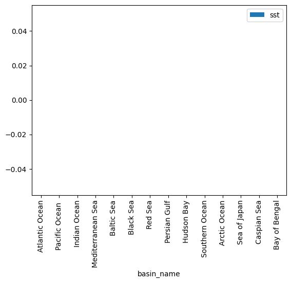
Recap#
This notebook applied xarray to a real SST dataset and covered its more advanced tools:
Interpolation —
.interp()to estimate values at new coordinates (linear/nearest/cubic), in one or more dimensions.Groupby — split-apply-combine on grids: building a monthly climatology and removing it to get anomalies, with both
.map(...)and groupby arithmetic.Resample, rolling, coarsen — change time resolution by calendar (
resample), smooth with a moving window (rolling), or average fixed blocks (coarsen).A full workflow — masking SST by ocean basin (interpolating a basin mask onto the grid), grouping by basin, and summarizing into a table and bar chart.
With pandas and xarray you now have the core toolkit for tabular and gridded data. The SST lab is your at-home assignment.